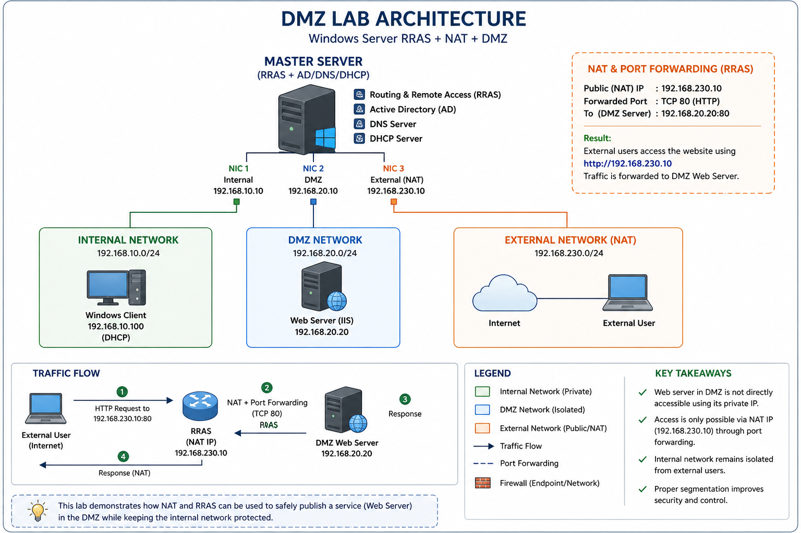

🧠 I Thought I Already Knew This
There's a specific kind of overconfidence that comes from reading too many diagrams. You look at the boxes, follow the arrows, nod along — "yes, DMZ, isolated zone, NAT, port forwarding, got it" — and somewhere along the way your brain files it under "understood."
I had that problem with network segmentation. I'd read about DMZs. I'd drawn the architecture on paper. I could explain it to someone else. So one weekend I thought: let me actually build it, just to confirm what I already know.
🏗️ What I Was Building
The objective was textbook DMZ stuff. Expose a web server to the outside world without letting the outside world anywhere near the internal network. Classic. Clean. Shouldn't be complicated.
One Windows Server to rule them all — acting as the backbone with RRAS, Active Directory, DNS, and DHCP all on one machine. Three network cards. Three completely separate worlds.
Private — no external access
routes
Exposed — controlled access only
Port Fwd
Simulated external user
The web server sits in the DMZ at 192.168.20.20, running IIS. External users hit 192.168.230.10 — RRAS picks it up, port-forwards TCP 80 into the DMZ, DMZ server responds. The internal network at 192.168.10.0/24 never enters the picture. Clean isolation.
That was the plan, anyway.
😐 The Website Loaded. That Was the Problem.
I set up RRAS. Configured the three NICs. Installed IIS on the DMZ server. Set up routing. Felt pretty good about the whole thing.
Then I opened a browser on the external machine and navigated to 192.168.230.10.
No port forwarding configured. No NAT rules. No explicit routing to the DMZ.
Still worked.
Most people at this point would think "great, it works!" and move on. I almost did. But something felt wrong. If the DMZ is supposed to be isolated, and I hadn't actually built the isolation yet — why was the traffic getting through?
Either my DMZ was magic, or I was testing something completely different from what I thought I was testing.
🔍 Traffic Was Never Reaching the DMZ
I started tracing the actual packet path. Where was this traffic actually going when it hit 192.168.230.10?
IIS was installed on the master server — the same machine running RRAS. So when external traffic arrived at 192.168.230.10, the OS went: "Oh, port 80? I have IIS running right here, I'll handle that myself." Never forwarded. Never routed. Just… answered locally.
Expected flow:
User
(NAT/FWD)
Server
User
What was actually happening:
User
IIS locally
User
⚠️ The DMZ server was never involved. At all.
Once I understood what was happening, the fix was obvious: uninstall IIS from RRAS completely, keep it strictly on the DMZ server, then build the actual port forwarding rules. After that, direct access to 192.168.20.20 was blocked — and access through 192.168.230.10 via NAT actually worked properly for the first time.
Real isolation. Finally.

⚠️ Of Course, That Wasn't the Only Issue
Fixing the IIS problem was just the beginning. Because the moment I had real isolation working, three more things broke. Which, honestly, is how you know a lab is actually teaching you something.
Website loaded without any NAT or forwarding rules. Traffic appeared to work perfectly. The DMZ seemed operational. It wasn't.
IIS was running on the RRAS server itself — 192.168.230.10. OS served the request locally, DMZ was never contacted. Fixed by moving IIS exclusively to 192.168.20.20 and configuring actual port forwarding rules.
Internal clients got IP addresses from DHCP fine, but couldn't reach external networks. Routing felt broken even though RRAS was configured correctly.
The DHCP scope was handing out the wrong gateway. Clients had no idea how to reach RRAS. Fixed by setting the default gateway in the DHCP scope to point to the RRAS internal interface: 192.168.10.10.
A machine suddenly showed 169.x.x.x — APIPA. Couldn't communicate with anything. Looked like a DHCP failure but DHCP was running fine.
IP conflict. Two devices had the same IP. Windows detected the conflict, released the address, and fell back to APIPA since DHCP didn't respond in time. Fixed by assigning a unique static IP to the conflicting device.
I expected RRAS to enforce security between the networks. Block unwanted traffic between zones. Act as a gatekeeper at the segmentation boundary.
RRAS routes traffic — it doesn't filter it. Transit traffic between zones passes through without inspection. Security controls must live at the endpoints (Windows Firewall on each machine) or on a dedicated firewall appliance sitting between zones.
🔄 Before and After This Lab
The difference between reading about something and building it — then watching it break — is the difference between recognising a word and knowing its weight.
🧠 The Four Things That Actually Stuck
🚀 Where This Lab Goes From Here
This setup works — properly now. But it's a foundation, not a finish line. There's a lot more to add before it resembles anything close to a real production environment.
Reading about networking gives you vocabulary. Building a broken network gives you understanding. They feel like the same thing until you try the second one.
Still exploring. Still breaking things. Still learning — just now with a much healthier distrust of "it works."
💬 Discussion
Built a similar lab? Hit the same RRAS wall? Drop it below.